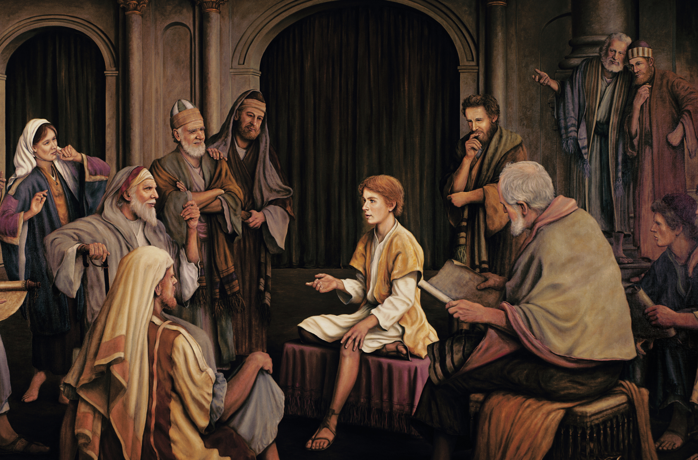

Lord, Savior, Light of the World, Mediator, Messiah, Only Begotten Son, Comforter, Lamb of God, Jehovah, Good Shepherd, God of the New Testament
JESUS

The Life of Jesus Christ
The birth of Christ was prophesied by several prophets, and his mortal ministry would profoundly change the lives of everyone who lives, has lived, or will ever live on earth.